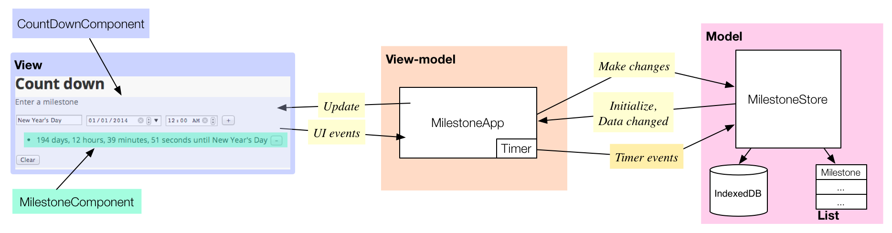

使用 IndexedDB
在客户端保存数据。
浏览器提供了多种在客户端保存数据的方式。 其他一种存储方式为 IndexedDB— 被 很多浏览器 支持的一种标准存储方式。 IndexedDB 提供了一个索引数据库的实现。 IndexedDB 中每个记录通过唯一的索引或者主键标示， 这样查找数据非常高效。 你可以在 IndexedDB 中保存大量结构化数据， 例如 图片、数组、map以及对象 等。 标准并没有限制每个记录的大小 或者每个数据库的大小， 但是 浏览器自己可能会有存储大小的限制。
IndexedDB 有多中优势。 使用 IndexedDB 你的应用
- 即使在没有网络情况下也可以使用所有功能。
- 可以在断网情况下缓存数据和恢复状态。
- 在网络连接中断的情况下不丢失数据。
- 需要较少的网络流量。
- 由于数据管理在本地处理而不是通过网络，所有 性能会好很多。
该教材介绍如何用 dart:indexed_db 库 来在浏览器的 IndexedDB 中保存和查询数据。
- 运行应用
- 关于该应用的基本知识
- 关于 IndexedDB 的详细介绍
- 导入 IndexedDB 库
- 检查是否支持 IndexedDB
- 创建并打开数据库
- 创建一个对象存储
- 使用名字索引
- 使用事物
- 添加数据
- 删除数据
- 清空数据
- 用 cursor 查询所有数据
- 其他资源
- 接下来干啥？
运行应用
下面的 count_down 应用维护了一些里程碑事件
并为每个事件显示一个倒计时功能。
动手试试！ 输入每个里程碑的名字、日期和时间然后点击加号 (+) 按钮。 应用显示该里程碑发生时间的倒计时 和名字。 每隔一秒该应用更新一下显示的数据。
由于该程序用浏览器的 IndexedDB 保存数据， 所以关闭浏览器页面，然后再次打开 该页面。 你创建的里程碑事件依然存在。
使用里程碑右边的减号(-) 按钮 来删除该事件。 用 Clear 按钮来删除所有的事件。
用开发者工具查看数据库
你可以用浏览器开发者工具来查看 你的应用使用的 IndexedDB 数据库。 在 Chrome中，通过 View > Developer > Developer Tools 菜单， 然后选择打开窗口的 Resources tab 页。 下图显示了有两条里程碑 事件的 count_down 应用的数据库。
count_down 应用有个名字为 milestoneDB 的数据库。
在该数据库中有一个名字为 milestoneStore 的对象存储。
在该示例中，每个对象存储中的记录都是一个
里程碑 map。
名字为 name_index 的索引和每个里程碑的名字关联，
该索引支持按照里程碑的名字来搜索数据。

关于该应用的基本知识
count_down 应用使用了一个 Model（模型）、 View（视图）、 View-model (MVVM) 结构。

-
上图中间的 View-model 连接 模型和视图。 使用 UI 和 Timer 事件来修改 模型。 MilestoneApp 类是实现了View-Model 功能的 主要类， 该类管理 Timer并实现 应用的业务逻辑 （负责模型和视图的信息交换）。
-
View 实现了该应用的用户界面。 count_down 应用总有两个自定义元素实现了视图： CountDownComponent 描述了整个应用的用户界面， MilestoneComponent 描述了每个独立里程碑的用户界面。 当用户界面发生事件的时候，这些控件通知 View-model。
-
Model 包含并管理数据。 MilestoneStore 类实现了 模型， 在内存中管理一个里程碑对象列表， 并且保持 IndexedDB 和列表同步， 持久化的保存里程碑数据。 View-model 查询模型来初始化数据， 并用 Polymer 的数据绑定技术来和视图同步。 并且还使用了 Timer 事件来触发模型更新。
count_down 应用使用的库
count_down 应用使用如下库：
| 库 | 描述 |
|---|---|
| dart:indexed_db | 保存数据到索引数据库 |
| dart:async | 执行异步操作 |
| dart:core | 用 DateTime 和 Duration 来管理时间相关的任务 |
| Polymer | 实现自定义元素和数据绑定 |
该教程介绍了 count_down 应用中使用的 IndexedDB API。
关于 IndexedDB 的详细介绍
关于 IndexedDB 有些你需要知道的事实：
-
每个源 (主机、协议和端口) 都有自己的数据库。 在一个源中使用唯一的名字来区分每个数据库。 IndexedDB 具有同源策略， 每个应用和数据库具有相同的源（同一个网站）。
-
一个 数据库 通过名字和版本号识别。 一次一个数据库只能有一个版本。
-
一个 对象存储 通过唯一的名字来识别。 只能在 “upgrade needed” 事件中创建对象存储。 在对象存储中保存数据记录。 一个数据库可以有多个命名对象存储。
-
一个 事物 提供了数据库可靠 的数据查询和修改操作。 所有对数据的操作都必须在 事物范围内。
-
一个 记录 是一个 key-value 对， key 是该数据记录的唯一访问标示符。 你可以自己设置 key 也可以 让对象存储为你创建。
-
一个 索引(index) 是一个特殊的对象存储， 在保存的数据 key 值和 数据库的 key 之间做映射。 索引是可选的。
-
一个应用可以使用多个数据库。 每个数据库可以有多个对象存储， 每个对象存储可以有多个记录。

count_down 应用中的 IndexedDB
count_down 应用使用一个名字为
milestoneDB 的数据库，版本号为 1。
里面有一个名字为 milestoneStore 的对象存储。
该应用把里程碑对象保存为一个 Map，
Map 中的 key 和 value 都是字符串。
milestoneName 字段是里程碑的唯一名字。
happensOn 字段是否日期加上时间的值。
当该应用重新打开的时候，
这些字段可以恢复应用的状态。

因为里程碑的名字是唯一的， 应用可以用该名字作为数据库的 key。 然而，处于演示目的该应用使用了 一个由数据库生成的主键作为 key。 在开发者工具窗口中可以发现该主键：
导入 IndexedDB 库
要使用 Dart IndexedDB API 必须 先导入 IndexedDB 库：
import 'dart:indexed_db';
检查是否支持 IndexedDB
使用 IdbFactory 类的 supported getter 函数
来判断浏览器是否支持 IndexedDB。
bool idbAvailable = IdbFactory.supported;
如果 supported 值为 false，你可以
- 抛出异常并退出应用
- 使用其他的 API，
例如用于客户端存储的
window.localStorage - 继续运行，不启用本地持久化和离线功能
- 或者 和 count_down 应用一样， 禁用 UI 控件并显示错误信息。
创建并打开数据库
用 window.indexedDB.open() 来创建新的数据库或者
打开一个已经存在的数据库。
根据你名字和版本参数来判断
是否打开或者创建数据库。
-
要打开一个数据库， 使用当前存在数据库的名字 和版本号。
-
要更新数据库到新的版本， 用高版本号和已经存在的名字 作为参数调用 open() 函数。 (一个数据库同时只能存在一个 版本) 同时该操作会触发一个 upgrade needed（需要升级） 事件。
-
要创建一个全新数据库， 用新的名字打开数据库即可。 同时也会触发需要升级事件。
下面是 MilestoneStore 类中创建和 打开数据库的代码：
Future open() {
return window.indexedDB.open('milestoneDB',
version: 1,
onUpgradeNeeded: _initializeDatabase)
.then(_loadFromDB);
}
前两个参数代表数据库的名字
和版本号。
第一次运行 count_down 应用的时候，
版本号为 1 的 milestoneDB 数据库被创建。
下次再次运行该应用的时候，
数据库直接被打开。
第三个参数 onUpgradeNeeded 是需要升级事件
的回调函数。
当新数据创建或者
数据库版本增加的时候
会触发该事件。
在这个回调函数中可以创建新的
对象存储。
你只能在需要升级事件中来创建
对象存储。
要保存数据，你_必须_ 有一个对象存储。
下一届介绍如何创建对象存储。
下面的流程图概述了 window.indexedDB.open() 函数
的执行逻辑。

Because creating and opening a database can take time,
window.indexedDB.open() returns a Future object,
which runs asynchronously and returns a value, the database object,
sometime in the future.
The database object is returned to a callback function
registered with then().
In this example,
the callback function is called _loadFromDB().
Using cursors,
_loadFromDB() reads all the milestones
from the database and populates the app.
The details are covered in
用 cursor 查询所有数据.
创建一个对象存储
When a new database is created, it contains no object stores. The only place you can create an object store is during an upgrade needed event. Fortunately, an upgrade needed event is fired when a new database (or a new version of a database) is created.
The callback function for upgrade needed events
in the count_down app is _initializeDatabase.
This function creates an object store and an index.
static const String MILESTONE_STORE = 'milestoneStore';
static const String NAME_INDEX = 'name_index';
void _initializeDatabase(VersionChangeEvent e) {
Database db = (e.target as Request).result;
var objectStore = db.createObjectStore(MILESTONE_STORE,
autoIncrement: true);
var index = objectStore.createIndex(NAME_INDEX, 'milestoneName',
unique: true);
}
The code gets the database object from the VersionChangeEvent object that is passed into the callback function as an argument.
Use the Database object’s createObjectStore() method
to create a new object store with the given name.
Each object store must have a unique name.
The count_down app uses one object store called milestoneStore.
All the countdown milestones are stored and retrieved
in this object store.
The code sets autoIncrement on the object store to true.
When autoIncrement is true,
the database generates unique, primary keys for you,
which saves you the trouble of ensuring unique keys.
Finally, _initializeDatabase creates a name index.
使用名字索引
An index provides a lookup table. You can associate a primary key with a field in the stored objects. In the example, the index associates a primary key with the milestoneName field.

Using an index provides two benefits:
- you can search on a field in the object instead of by primary key,
- and you can use the index to ensure the value of the field is unique.
The count_down app creates an index at the same time it creates the object store: during an upgrade needed event, which is the the only time you can create an index.
static const String NAME_INDEX = 'name_index'; ... objectStore.createIndex(NAME_INDEX, 'milestoneName', unique: true);
The createIndex method takes three parameters:
- the name of the index, here ‘name_index’. This must be unique.
- the key path, which indicates the field in the stored object to index.
- unique, a boolean value. When true, the index ensures that the milestone name is unique. In the count_down app, if you try to add a milestone with the same name as another, it is this index that causes the add() to fail.
使用事物
All database operations must be performed within a Transaction.
Get a transaction from the Database object,
which in the count_app is named _db.
Transaction t = _db.transaction(storeNameOrNames, mode);
The first argument to transaction() is the scope of the transaction.
In the count_down app,
the scope is always milestoneStore,
the lone object store in the database,
but you could specify multiple object stores.
For efficiency, you should specify only the stores you need.
The second argument is a string that specifies the mode;
it can be readwrite or readonly or versionchange.
The count_down app uses only readwrite and readonly transactions.
Use readwrite transactions only when necessary:
readonly transactions are more efficient,
and you can run multiple readonly transactions
concurrently on overlapping scopes,
but only one readwrite transaction.
Once you’ve created a transaction, you can perform one or more operations using that transaction. Database operations can take time, so the work is performed off of the main UI thread and results are provided via Futures. Each operation uses a Future, which completes when the operation is complete. The transaction itself also uses a Future, which completes when all operations on the transaction complete.
For example, you might use one transaction to add multiple records to an object store. Each add is a separate operation and uses a separate Future. The following diagram shows the logic flow of a program that adds three records to a database. When all three add operations complete, the transaction completes.

Many database transactions follow this pattern:
- Create a transaction on an object store.
- Perform one or more operations using the transaction.
- Use the operation’s callback function to perform a task when the operation completes successfully. For example, when adding records to a database, you can get the key generated by the database for the added record.
- Use the
transaction.completedcallback function to perform a task when all the operations complete successfully. Generally, the count_down app uses this callback function to keep the list of milestones in sync with the database.
添加数据
Here’s the code that adds a new record to the database.

The code creates a new Milestone object and converts it to a Map, then creates a new readwrite Transaction on the object store.
Then, to add the milestone Map to the database,
the code calls the add() method on the object store.
and registers a callback function using then().
Because the object store was created with autoIncrement: true,
adding a record to the database automatically creates
a unique primary key for the new record.
This key is returned as a parameter to the callback function.
Finally, the code registers a callback function for the transaction.
When the add operation has been performed on the database, the Future related to the add operation completes and the callback function is called with the auto-generated key. The count_down app saves the key in the Milestone object.
At this point, it is important to note that although the add operation is complete, the transaction is not! Any changes made to the database by the operation are not available until the transaction completes.
When all operations on a transaction complete, in this case, a single add operation, the transaction completes and its callback function is called. In the transaction’s callback function, the count_down app adds the milestone to the list in memory and the Future returns with the new milestone object (and the View-model starts the Timer).
删除数据
Here’s the code that removes a key-value pair from a database.
var transaction = _db.transaction(MILESTONE_STORE, 'readwrite');
transaction.objectStore(MILESTONE_STORE).delete(milestone.dbKey);
return transaction.completed.then((_) {
milestone.dbKey = null;
milestones.remove(milestone);
});
Again the code creates a readwrite transaction on a named object store.
To delete a key-value pair, the mode must be readwrite.
Use the delete() method on the object store to delete a key-value pair.
Specify the key as the argument to delete().
When the transaction completes successfully, the count_down app can safely remove the milestone from the list in local memory and stop the timer, if necessary.
Note that this code does not specify a callback function for the delete operation, only for the transaction. The task it needs to do, namely to remove the milestone from the list in memory, can occur when the transaction completes.
清空数据
Use the clear method on the object store to remove all records.
var transaction = _db.transaction(MILESTONE_STORE, 'readwrite');
transaction.objectStore(MILESTONE_STORE).clear();
return transaction.completed.then((_) {
milestones.clear();
});
用 cursor 查询所有数据
When the app starts, if there’s an existing database and that database has milestones, the count_down app reads the records from the database and initializes the internal list of milestones from that information.
The _loadFromDB() method
gets called after the database has been successfully opened.
It is within this method that the database is read.
Future _loadFromDB(Database db) {
_db = db;
var trans = db.transaction(MILESTONE_STORE, 'readonly');
var store = trans.objectStore(MILESTONE_STORE);
var cursors = store.openCursor(autoAdvance: true).asBroadcastStream();
cursors.listen((cursor) {
var milestone = new Milestone.fromRaw(cursor.key, cursor.value);
milestones.add(milestone);
});
return cursors.length.then((_) {
return milestones.length;
});
}
Because getting records does not modify the database, this transaction is readonly.
You can use a Cursor object to step through the records in the database one by one, creating a Milestone object for each. The object store uses a stream to fire an event for each record retrieved from the database. By listening on the stream, your code can be notified for each record read. The count_down app creates a corresponding Milestone object in the internal list in memory for each database record retrieved.
Open a cursor on a transaction’s object store with openCursor.
The cursor indicates the current position in the database.
The count_down app opens a cursor and sets the optional
autoAdvance argument to true.
This means that after reading a record from the database
and returning its value,
the cursor advances automatically to the next record.
If you don’t use autoAdvance,
your code has to use the next() method
to advance the cursor to the next record.

The openCursor() method returns a stream on which you can listen for events. Here, the stream is a broadcast stream, so the app can listen both for read events and for a final count of records retrieved.
For each record retrieved from the database,
an event fires and the callback function is called.
A
CursorWithValue
object, named cursor in this example,
is passed to the callback function.
Use cursor.key to get the key for the record just retrieved.
Use cursor.value to get the value for that record.
The _loadFromDB method returns a Future that returns the length of the stream.
其他资源
- 关于 Future 的更多信息请查看 使用 Future APIs 和 Future 和错误处理。
- For information about Polymer, read Define a Custom Element.